Instructions on how to run the rpRanker workflow to simulate for the production of a compound of interest in a strain of interest
In this document we will go through, step by step, how to login and create a new account on the https://galaxy-synbiocad.org/dev Galaxy platform, import workflows and GEM models and run the rpRanker workflow. As a test case we will run cis,cis-muconate in E.Coli.
[a][b]
- Go to https://galaxy-synbiocad.org/dev and Login (or Register if this is the first time) by selecting the upper right tab on the upper banner.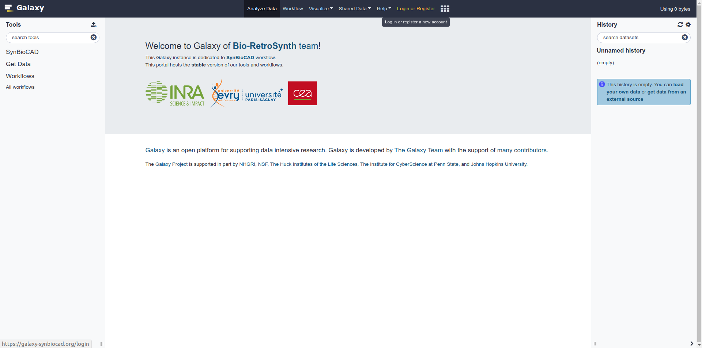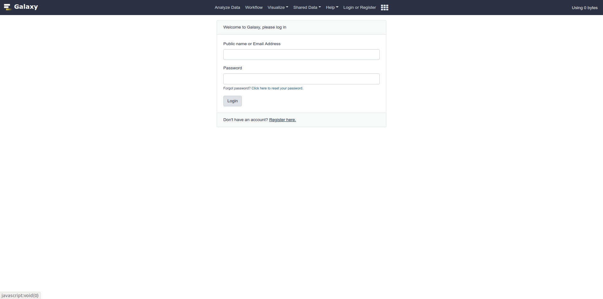
- Import the following workflow: rpRanker by selecting the “workflow” tab on the upper banner. Then import the workflow by selecting “import” in the dropdown menu next to the workflow you want.
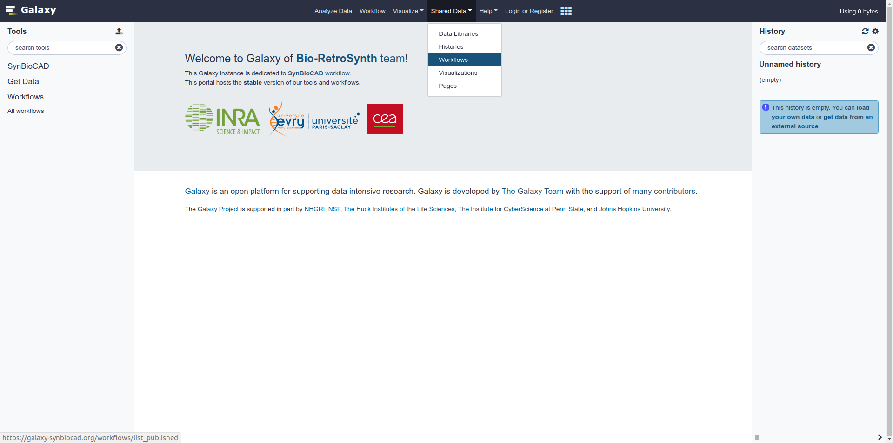
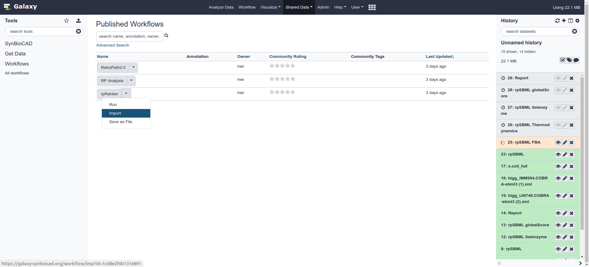
- The workflows require MIRIAM annotated SBML files with MetaNetX cross-references. To import a tested model, select the “Data Libraries” from the “Shared Data” tab. Then Select the “Models” entry and add it to your history. You can also upload models from other sources. However for the workflow to work correctly make sure that cross references of species and reactions are included within the SBML file (https://www.ebi.ac.uk/biomodels-main/annotation). Be sure to specify the name of the compartment in all the tools if you use a model that is not from MetaNetX directly.
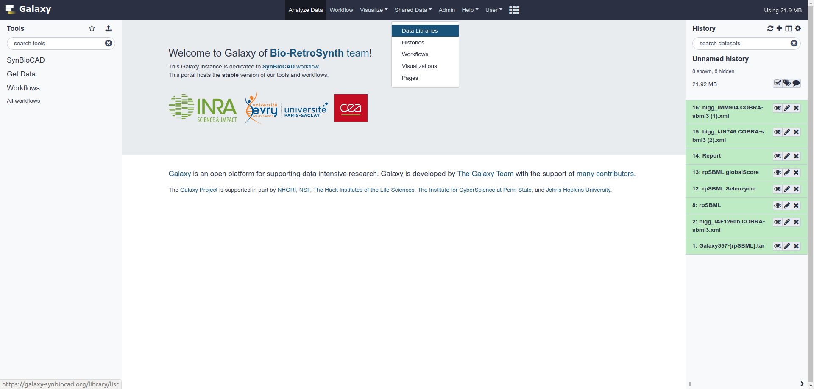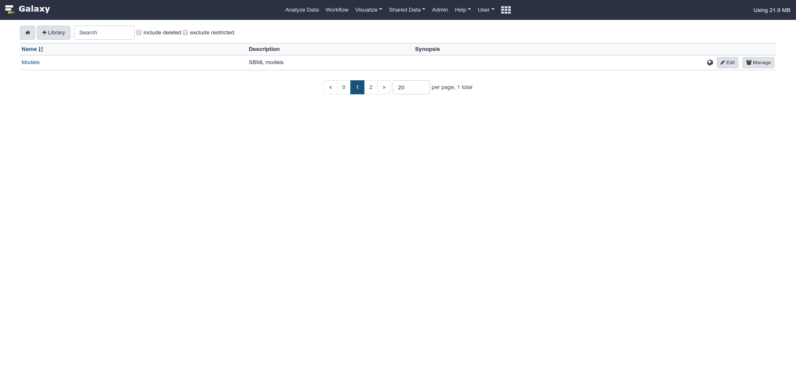
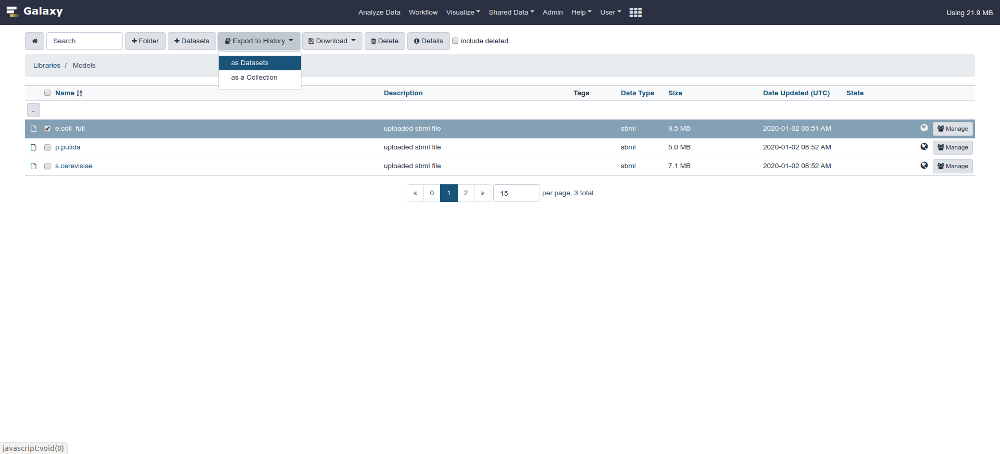
- To run the workflow, select the “Workflow” tab on the upper banner and select “run” the drop-down menu for the workflow of interest.
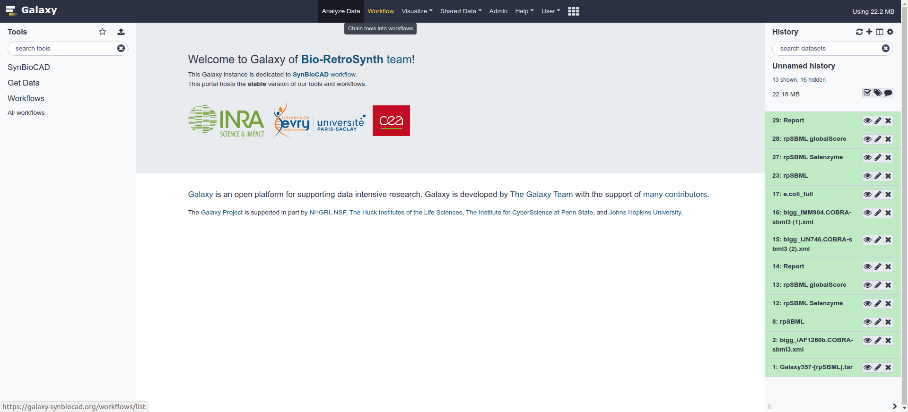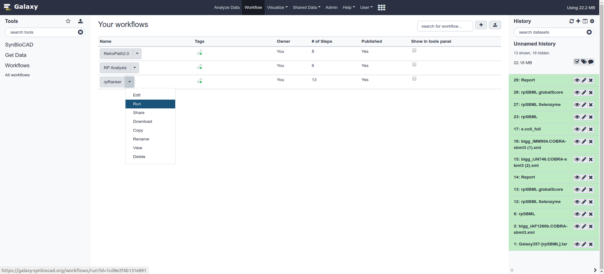
- Fill the desired content of the workflow (tab 1 to 9 for rpRanker) and run it by clicking on the upper right button “Run workflow”. The following information must be provided:
- An InChI string for the target molecule you want to produce (1). For example: InChI=1S/C6H6O4/c7-5(8)3-1-2-4-6(9)10/h1-4H,(H,7,8)(H,9,10)/p-2/b3-1-,4-2-
- From the dropdown menu, select the SBML model of the organism you would like to produce the compound of interest in (2). For example: E.Coli Full
- A number dictating the maximal number of enzymatic steps that you would like the have. The algorithm will try to find a pathway that is less or equal to that specified number (3). For example 3
- All the weights associated with each category, between 0.0 and 1.0 (4-9). For example [1.0, 1.0, 1.0, 1.0] for equal weights between each scoring category.
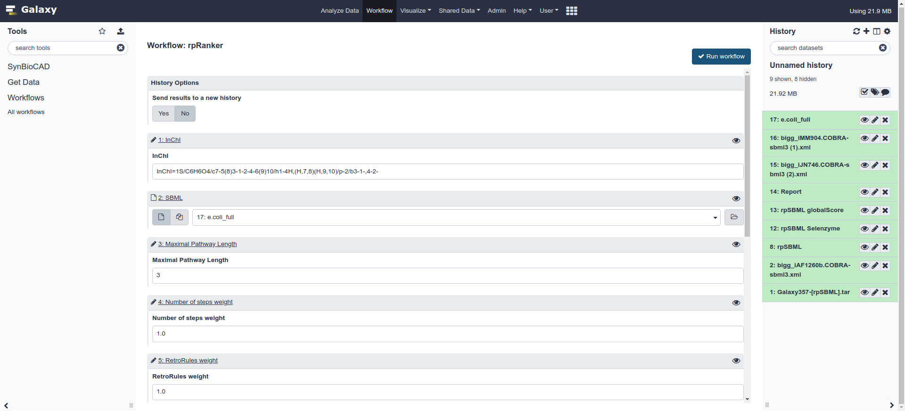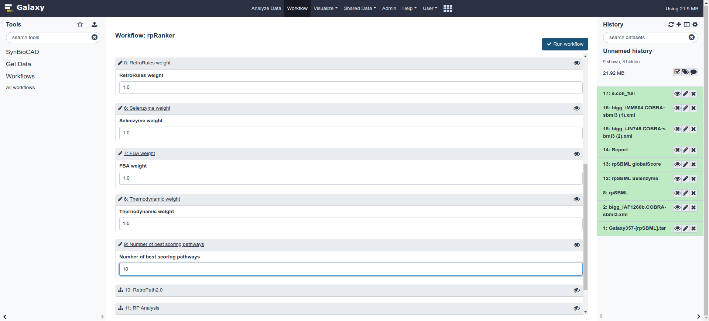
Results
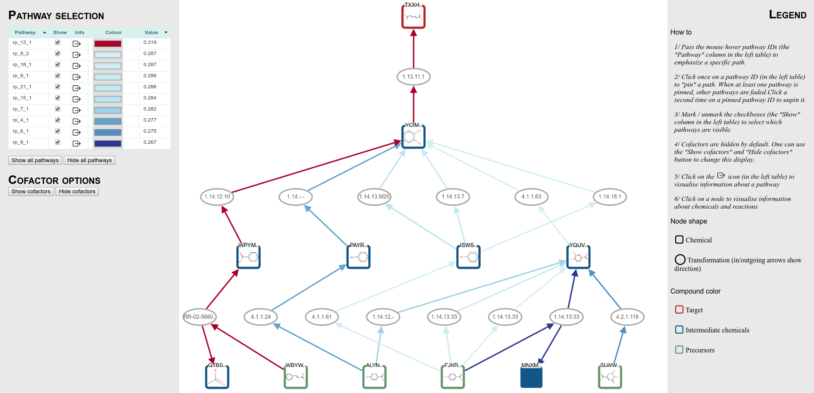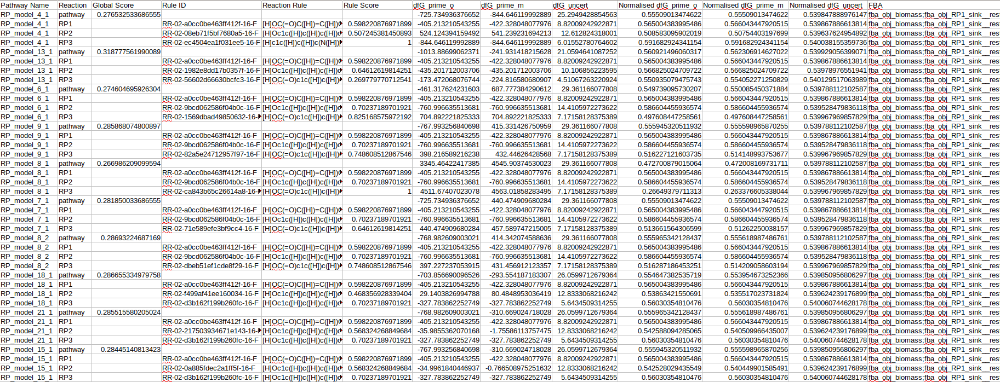The result of the rpRanker workflow is a series of predicted pathways ranked according to the following criterias: Thermodynamic feasibility of the pathway, flux of the target molecule within a full GEM model, length of the pathway and the enzymatic sequences match to the predicted reaction. The combination of that analysis is shown (above) as a “global score”. For example in the above example, one particular pathway (in red) particularly stands out against all the other pathways. The user is welcomed to inspect the individual chemical species, reactions and pathways for the aforementioned characteristics.
The rpRanker workflow also returns a CSV file with all criterias of the heterologous pathway analysis summarised.
[a]In general this document should read like a step-by-step instructions on how to run an example study case. You should
1. Introduce tehe case what you want to achieve
2. Give all information to do it, InChI, strains, parameters,...
3. Tell how to read the results
This only partially done...
[b]You are right that this is partially done since we still need to add the visualiser.
I will add the study case of muconic acid.